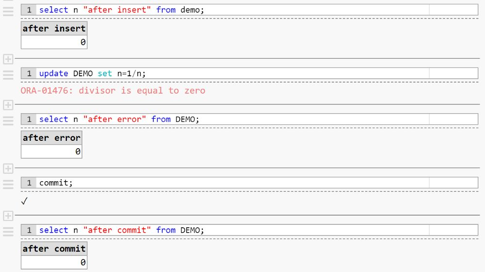

This was first published on https://www.dbi-services.com/blog/rollback-to-savepoint/ (2020-02-04)
Republishing here for new followers. The content is related to the versions available at the publication date.
.
I love databases and, rather than trying to compare and rank them, I like to understand their difference. Sometimes, you make a mistake and encounter an error. Let’s take the following example:
create table DEMO (n int);
begin transaction;
insert into DEMO values (0);
select n "after insert" from DEMO;
update DEMO set n=1/n;
select n "after error" from DEMO;
commit;
select n "after commit" from DEMO;The “begin transaction” is not valid syntax in all databases because transactions may be started implicitly, but the other statements are valid syntax in all the common SQL databases. They all raise an error in the update execution because there’s one row with N=0 and then we cannot calculate 1/N as it is a math error. But, what about the result of the last select?
If I run this with Oracle, DB2, MS SQL Server, My SQL (links go to example in db<>fiddle), the row added by the insert is always visible by my session: after the insert, of course, after the update error, and after the commit (then visible by everybody). 
The same statements run with PostgreSQL have a different result. You cannot do anything after the error. Only rollback the transaction. Even if you “commit” it will rollback.
Yes, no rows are remaining there! Same code but different result.
You can have the same behavior as the other databases by defining a savepoint before the statement, and rollback to savepoint after the error. Here is the db<>fiddle. With PostgreSQL you have to define an explicit savepoint if you want to continue in your transaction after the error. Other databases take an implicit savepoint. By the way, I said “statement” but here is Tanel Poder showing that in Oracle the transaction is actually not related to the statement but the user call: Oracle State Objects and Reading System State Dumps Hacking Session Video – Tanel Poder’s blog
In Oracle, you can run multiple statements in a user call with a PL/SQL block. With PostgreSQL, you can group multiple statements in one command but you can also run a PL/pgSQL block. And with both, you can catch errors in the exception block. And then, it is PostgreSQL that takes now an implicit savepoint as I explained in a previous post: PostgreSQL subtransactions, savepoints, and exception blocks
This previous post was on Medium ( you can read https://www.linkedin.com/pulse/technology-advocacy-why-i-am-still-nomad-blogger-franck-pachot/ where I explain my blog “nomadism”), but as you can see I’m back on the dbi-services blog for my 500th post there.
My last post here was called “COMMIT” https://www.dbi-services.com/blog/commit/ where I explained that I was quitting consulting for CERN to start something new. But even if I decided to change, I was really happy at dbi-services (as I mentioned on a LinkedIn post about great places to work). And when people like to work together it creates an implicit SAVEPOINT where you can come back if you encounter some unexpected results. Yes… this far-fetched analogy just to mention that I’m happy to come back to dbi services and this is where I’ll blog again.
As with many analogies, it reaches the limits of the comparison very quickly. You do not ROLLBACK a COMMIT and it is not a real rollback because this year at CERN was a good experience. I’ve met great people there, learned interesting things about matter and anti-matter, and went out of my comfort zone like co-organizing a PostgreSQL meetup and inviting external people ( https://www.linkedin.com/pulse/working-consultants-only-externalization-franck-pachot/) for visits and conferences.
This “rollback” is actually a step further, but back in the context I like: solve customer problems in a company that cares about its employees and customers. And I’m not exactly coming back at the same “savepoint”. I was mostly focused on Oracle and I’m now covering more technologies in the database ecosystem. Of course, consulting on Oracle Database will still be a major activity. But today, many other databases are raising: NoSQL, NewSQL… Open Source is more and more relevant. And in this jungle, the replication and federation technologies are raising. I’ll continue to share on these areas and you can follow this blog, the RSS feed, and/or my twitter account.
{kind=link}
{kind=link}